ECG Blog #89 (Basic Concepts-2) – Các khoảng (PR-QRS-QT)

--------------------------------
Đây là phần thứ 2 của loạt Basic ECG Concepts (Các khái niệm điện tâm đồ cơ bản). Thay vì các ca cụ thể — mục tiêu của loạt Basic ECG Concepts này là ôn tập ngắn gọn một số chủ đề ít chuyên sâu hơn, vốn tạo nên nền tảng của việc đọc điện tâm đồ. Tài liệu này được trích (có chỉnh sửa) từ cuốn sách nhập môn mới của tôi về đọc điện tâm đồ = “A 1st Book on ECGs-2014” và bản 1st-ECG-Book-ePub mở rộng (đã phát hành trên kindle-nook-kobo-ibooks). Rất HOAN NGHÊNH ý kiến phản hồi của bạn về loạt bài này!
--------------------------------
LIÊN KẾT tới các bài Basic ECG Concepts khác:
- Basic Concepts #1 — Thuật ngữ QRS
- Basic Concepts #2 (chính bài này! ) — Các khoảng (PR/QRS/QT )
- Basic Concepts #3 — Xác định trục
- Basic Concepts #4 — Các nhóm chuyển đạo
- Basic Concepts #5 — LVH
- Basic Concepts #6 — Cách tiếp cận hệ thống
- Basic Concepts #7 — Thay đổi Q-R-S-T
--------------------------------

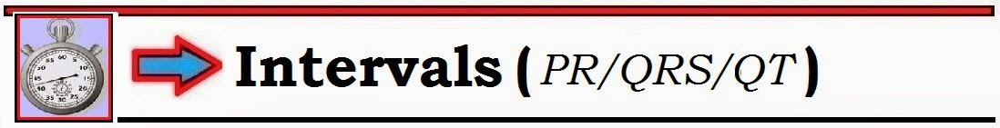
--------------------------------
MẤU CHỐT để đọc điện tâm đồ tối ưu là sử dụng một Cách tiếp cận hệ thống. Chúng tôi sẽ trình bày chi tiết cách tiếp cận được đề xuất trong một phần sắp tới của loạt Basic ECG Concepts. Còn bây giờ — chúng tôi chỉ giới hạn bình luận ở 3 điểm:
- Điểm #1: Bắt đầu bằng Phân tích mô tả — trong đó bạn lần lượt đánh giá 6 thông số sau: i) Tần số; ii) Nhịp; iii) Các khoảng; iv) Trục; v) Lớn các buồng tim; và vi) Thay đổi QRST. Ở bước đầu này không có diễn giải. Thay vào đó — người đọc chỉ đơn giản ghi nhận các dấu hiệu điện tâm đồ nhìn thấy.
- Điểm #2: Chỉ sau khi hoàn tất Phân tích mô tả — bạn mới nên đưa ra Nhận định lâm sàng. Đây là lúc tích hợp các dấu hiệu điện tâm đồ đã ghi nhận vào bối cảnh lâm sàng. Ví dụ — ngay cả ST chênh lên dạng lõm (concave up) rõ rệt cũng ít có khả năng là nhồi máu NẾU không có thay đổi ST soi gương (reciprocal) và bệnh nhân là người trẻ tuổi với triệu chứng không đáng lo ngại. Ngược lại — có thể cần cân nhắc nghiêm túc một STEMI giai đoạn sớm nếu cùng điện tâm đồ đó được ghi ở một bệnh nhân lớn tuổi bị đau ngực đáng lo ngại.
- Điểm #3: Bất kể bạn ưa dùng hệ thống nào để đọc có hệ thống — hãy xem CÁC KHOẢNG ở giai đoạn sớm của quy trình (xem bên dưới).
Đánh giá CÁC KHOẢNG: Khoảng PR – QRS – và QT
Có 3 khoảng điện tâm đồ cần đánh giá trên mỗi và mọi điện tâm đồ bạn gặp = i) Khoảng PR; ii) Thời gian QRS; và, iii) Khoảng QT (Hình 1).
- Lý do cần đánh giá các khoảng ở thời điểm sớm trong quy trình — là NẾU phức bộ QRS kéo dài, chúng ta cần xác định VÌ SAO QRS rộng trước khi tiếp tục đọc. Đó là vì tiêu chuẩn đánh giá trục, lớn các buồng tim, thiếu máu cục bộ và nhồi máu đều thay đổi khi có BBB (blốc nhánh – Bundle Branch Block).
Chúng tôi định nghĩa 3 khoảng điện tâm đồ như sau:
- Khoảng PR — là thời gian để xung động đi từ nút xoang (SA Node) tới và qua nút AV. Trên điện tâm đồ — khoảng này được xác định là thời gian đo từ khởi đầu sóng P — cho đến khởi đầu phức bộ QRS (Hình 1).
- Khoảng QRS — là thời gian để đi qua tâm thất (tức là thời gian để xung động đi từ Điểm 2 đến Điểm 5 trên Hình 1). Dù được gọi là một “khoảng” — thực chất chúng ta đang mô tả độ rộng (thời gian) của phức bộ QRS.
- Khoảng QT — tương ứng với giai đoạn kéo dài từ khởi đầu phức bộ QRS cho đến kết thúc sóng T.

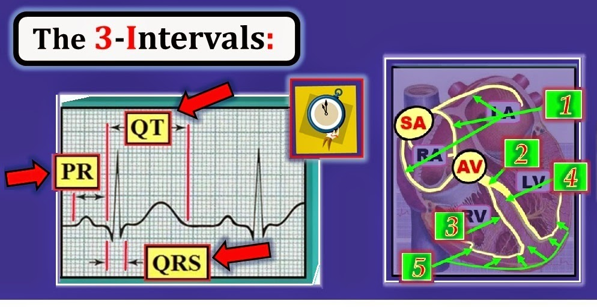
Điểm CHÍNH: Dẫn truyền qua từng tế bào cơ tim riêng lẻ thì chậm. Mục đích của hệ thống dẫn truyền được minh hoạ theo sơ đồ ở Hình 1 gồm hai mặt: i) Nó tăng tốc dẫn truyền rất nhiều (nhanh hơn ít nhất 100 lần so với dẫn truyền qua từng tế bào cơ tim); và ii) Nó phối hợp tâm thu thất (để co bóp thất trái và thất phải được đồng bộ) — nhờ đó tối ưu hiệu quả bơm máu của tim.
Giấy kẻ ô điện tâm đồ: Đo thời gian khoảng PR và QRS
Điều quan trọng là phải thành thạo các đơn vị thời gian thể hiện trên giấy kẻ ô điện tâm đồ — vì chúng ta sử dụng chúng liên tục khi đánh giá thường quy các phức bộ và các khoảng trên điện tâm đồ. Các đơn vị thời gian này được tóm tắt trong Hình 2:
- Mỗi ô lớn trên giấy kẻ ô điện tâm đồ cần 0.20 giây (1/5 giây) để ghi.
- Do đó — cần 1 giây để ghi 5 ô lớn.
- Mỗi ô nhỏ trên giấy kẻ ô điện tâm đồ cần 0.04 giây để ghi. Do đó — có 5 ô nhỏ trong mỗi ô lớn.

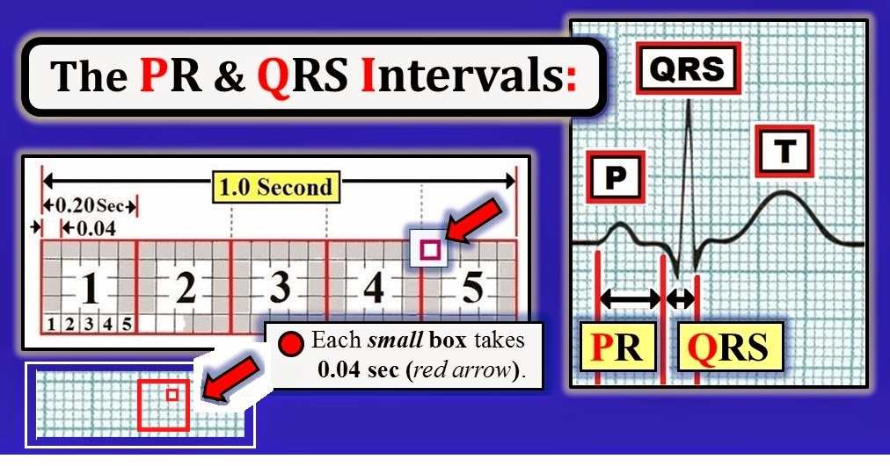
Khoảng PR: Thế nào là dài? Thế nào là ngắn?
Trên thực hành — khoảng PR ở người lớn bình thường không được dài hơn 1 ô lớn (0.20 giây). NẾU khoảng PR rõ ràng vượt quá 1 ô lớn — thì có blốc AV độ 1 (Hình 3).

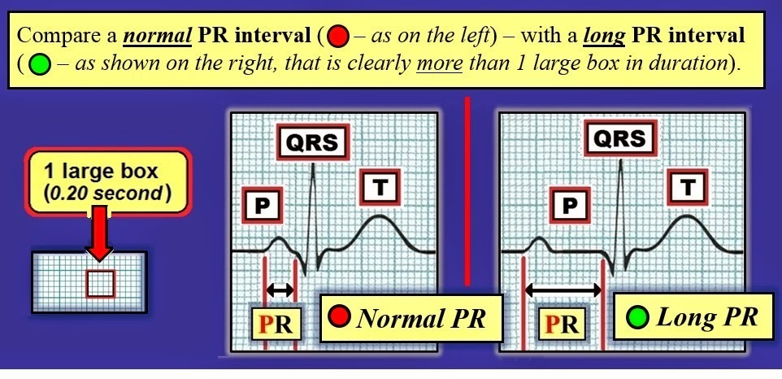
LƯU Ý LÂM SÀNG: Việc đo chính xác một khoảng PR bình thường là không quan trọng. Điều quan trọng là nhận ra khi nào khoảng PR kéo dài.
- Giá trị bình thường của các khoảng ở trẻ em là khác. Trẻ nhỏ có tim nhỏ hơn người lớn. Do đó — xung động có thể cần ít thời gian hơn để đi qua trái tim nhỏ của trẻ nhỏ so với thời gian để xung động đi qua tim của người lớn. Vì vậy, giá trị bình thường của thời gian khoảng PR và QRS ở trẻ em có thể hơi ngắn hơn so với người lớn. ĐIỀU CỐT LÕI: Cần lưu ý rằng đánh giá điện tâm đồ ở bệnh nhi khác với ở người lớn. Dù vậy — trong bài Blog này chúng tôi tập trung vào các tiêu chuẩn điện tâm đồ cho người lớn.
- Ngoài giới hạn trên bình thường của thời gian khoảng PR — khoảng PR cũng có thể quá ngắn (tức là dưới 0.12 giây). Bệnh cảnh lâm sàng chính gây ra điều này là hội chứng WPW (Wolff-Parkinson-White). Về mặt sinh lý — phần lớn thời gian tạo nên thời lượng bình thường 0.12 đến 0.20 giây của khoảng PR là để cố đi qua nút AV. Lý do khoảng PR ngắn hơn dự kiến (tức là dưới 0.12 giây) trong WPW — là do tồn tại một đường dẫn truyền đặc biệt đi tắt qua nút AV. Điều này làm xung động được dẫn tới tâm thất nhanh hơn nhiều — dẫn đến rút ngắn khoảng PR.
Nếu khoảng PR dài thì sao?
Tóm lại, NẾU khoảng PR dài (tức là rõ ràng dài hơn 1 ô lớn) — thì được coi là có blốc AV (nhĩ thất – Atrio-Ventricular) độ 1. Mỗi sóng P trên bản ghi vẫn được dẫn xuống tâm thất. Chỉ là cần thời gian lâu hơn một chút để tới đó (Hình 4).
- Có 3 mức độ của blốc AV. Trong 3 mức độ này — blốc AV độ 1 (được chẩn đoán khi có khoảng PR kéo dài, dài hơn 1 ô lớn) — là dạng nhẹ nhất. Diễn tiến lâm sàng của blốc AV độ 1 khi là một bất thường đơn độc thường lành tính — và, đa số trường hợp không cần điều trị đặc hiệu.
- Chi tiết về các dạng blốc AV nặng hơn (tức là blốc AV độ 2 hoặc độ 3, và blốc AV “mức độ cao”) nằm ngoài phạm vi bài này. Có thể cần hoặc không cần tạo nhịp (tuỳ thuộc vào tình trạng huyết động của bệnh nhân, mức độ nặng của blốc AV — và các yếu tố lâm sàng khác).

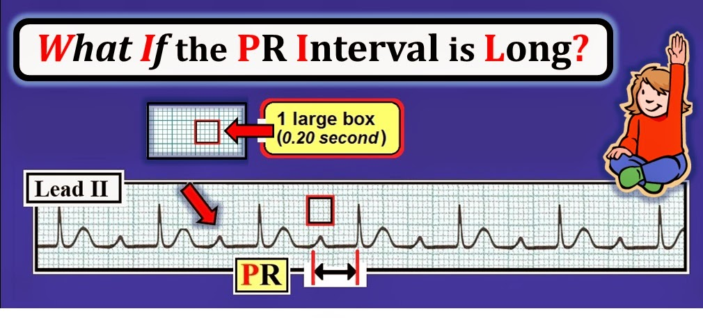
Thời gian QRS: Khi nào QRS rộng?
Ở người lớn — dẫn truyền qua tâm thất bình thường không mất quá 0.10 giây.
- Hãy nhớ: Cần 0.20 giây để ghi mỗi ô lớn trên giấy kẻ ô điện tâm đồ (Hình 2). Do đó cần một nửa thời gian này (= 0.10 giây) để ghi nửa ô lớn.
- Trên thực hành — QRS là “rộng” NẾU nó rõ ràng dài hơn nửa một ô lớn (= lớn hơn 0.10 giây) trên giấy kẻ ô điện tâm đồ (Hình 5).
LƯU Ý: Không cần đo chính xác phức bộ QRS. Nghĩa là — QRS là 0.08 giây, 0.09 giây hay 0.099 giây thì không quan trọng. Điều duy nhất cần quan tâm — là phức bộ QRS có thời gian bình thường hay kéo dài.
- “Cái hay” của quy tắc chung này — là nó cho phép bạn biết ngay lập tức LIỆU QRS bình thường hay rộng. Điều này thấy rõ ở nhịp xoang phía dưới Hình 5. Phức bộ QRS rõ ràng dài hơn nửa ô lớn một chút. Do đó — QRS rộng.
- Không có “giới hạn dưới” bình thường của thời gian QRS. Về mặt lâm sàng — chúng ta chỉ quan tâm QRS bình thường hay kéo dài.
- Điểm nâng cao: Lý do chúng tôi ưa dùng định nghĩa ≥0.11 giây (thay vì ≥0.12 giây) là “rộng” đối với thời gian QRS — là vì cả RBBB và một số dạng VT có thể xảy ra với mức kéo dài QRS nhẹ không quá mức này. Một ưu điểm nữa là với định nghĩa này thì dễ biết chỉ trong nháy mắt LIỆU QRS có rộng không — đơn giản bằng cách nhìn xem QRS có dài hơn nửa ô lớn hay không.

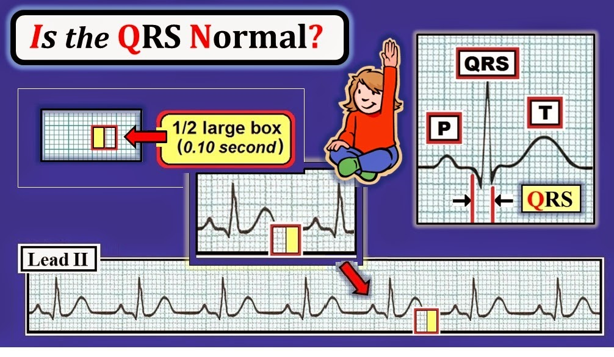
Nhìn kỹ: QRS có rộng không?
Để so sánh — ở Hình 6 chúng tôi minh hoạ phức bộ QRS bình thường so với rộng trông như thế nào. Dù phải thừa nhận là tinh tế — phức bộ QRS bên phải (vòng tròn xanh lá) rõ ràng dài hơn nửa ô lớn một chút. Do đó — QRS bên phải (vòng tròn xanh lá) là rộng.

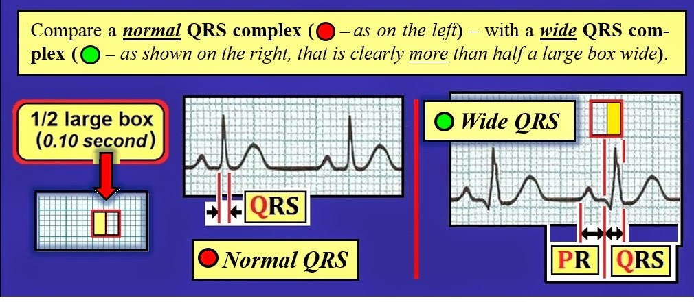
Nếu phức bộ QRS rộng thì sao?
NẾU QRS là rộng (tức là rõ ràng dài hơn nửa ô lớn) — thường nhất là do một trong 2 lý do: i) Có vấn đề về dẫn truyền xung động dưới nút AV — thường nhất phản ánh blốc nhánh hoặc phải hoặc trái – Right or Left Bundle Branch Block (= dẫn truyền bị thất bại ở Điểm 3 hoặc Điểm 4 trên Hình 1); — hoặc — ii) Xung động phát sinh từ tâm thất thay vì từ nút xoang.
- LƯU Ý: Có thể gặp các nguyên nhân khác gây QRS rộng nhưng ít phổ biến hơn (tức là quá liều thuốc, tăng kali máu, hội chứng Wolff-Parkinson-White, dẫn truyền lệch hướng). Ngoài ra — có thể có QRS giãn rộng theo kiểu không đặc hiệu trong nhịp xoang do sẹo mô tim hoặc tế bào chết (do nhồi máu cơ tim trước đó hoặc bệnh cơ tim). Kiểu không đặc hiệu này được gọi là IVCD (chậm dẫn truyền trong thất – IntraVentricular Conduction Defect). ĐIỀU CỐT LÕI: Dù có những nguyên nhân khác gây QRS rộng trong nhịp xoang — trên thực hành (và theo mục đích của cuốn 1st Book on ECGs này) — NẾU phức bộ QRS là rộng — Hãy nghĩ trước tiên đến: i) BBB (blốc nhánh – Bundle Branch Block) hoặc ii) một nhịp thất.
TỰ KIỂM TRA: Vì sao phức bộ QRS rộng?
Thường dễ phân biệt LIỆU nhịp là nhịp xoang với QRS rộng do BBB có sẵn từ trước (blốc nhánh – Bundle Branch Block) — hay QRS rộng vì nhịp khởi phát từ tâm thất thay vì từ nút xoang.
- Hãy xem 2 dải nhịp ngắn ở Hình 7. Trong mỗi trường hợp — phức bộ QRS đều rộng (tức là dài hơn nửa ô lớn). Lý do QRS rộng ở Ô A và Ô B của hình này là gì?

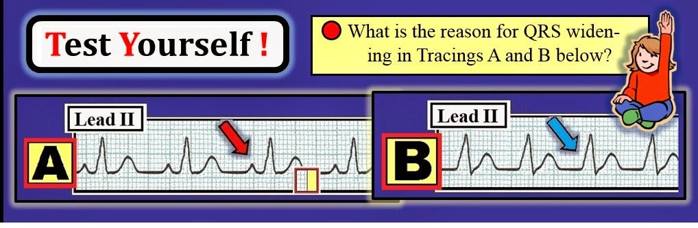
TRẢ LỜI cho Hình 7: Nhịp đều ở cả 2 dải nhịp ngắn trong hình này. Trong mỗi trường hợp — phức bộ QRS đều rộng (tức là rõ ràng dài hơn nửa ô lớn).
- Bản ghi A (ở Hình 7) — Có nhịp xoang, vì mỗi QRS đều đi sau một sóng P dương với khoảng PR cố định ở chuyển đạo II (mũi tên đỏ ở Ô A). Lý do phức bộ QRS rộng là BBB (blốc nhánh – Bundle Branch Block). Như được minh hoạ theo sơ đồ bên dưới ở Hình 8 — dẫn truyền nhanh (các mũi tên xanh lá lớn hơn) cho đến khi gặp chỗ blốc (BBB). Do blốc — sự hoạt hoá một tâm thất chậm hơn nhiều (các mũi tên xanh lá nhỏ hơn).
- Ở Bản ghi B — không có sóng P (mũi tên xanh dương ở Ô B của Hình 7). Điều này cho biết nhịp ở Ô B không phải nhịp xoang — mà bắt đầu ở tâm thất.
LƯU Ý: Trong bài này chúng tôi không bàn về những chi tiết phức tạp khi phân biệt RBBB với LBBB (blốc nhánh phải và trái – Right vs Left Bundle Branch Block) — cũng không bàn về phân biệt BBB với các dạng rối loạn dẫn truyền không đặc hiệu hơn (như IVCD). Những bệnh cảnh này nằm ngoài phạm vi thảo luận của bài Blog này. Với mục đích ở đây — chỉ cần nhận ra: i) LIỆU và khi nào phức bộ QRS rộng; và ii) Khi QRS thật sự rộng — VÌ SAO nó rộng (rối loạn dẫn truyền hay nhịp thất — như minh hoạ ở Hình 8)?
- Chúng tôi sẽ bàn về phân biệt giữa RBBB, LBBB, IVCD và WPW (như những lý do gây QRS rộng) trong một bài sau.

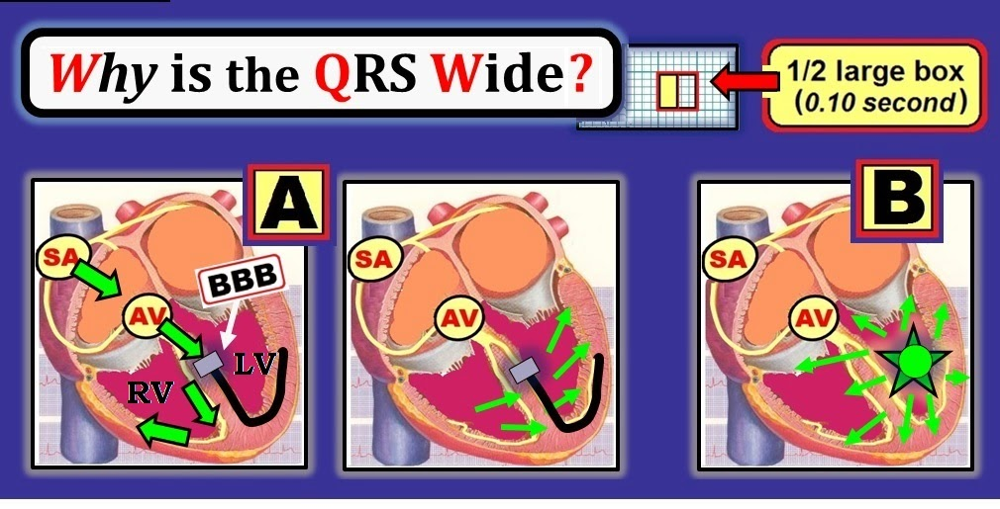
Khoảng QT: QT bình thường hay dài?
Về mặt sinh lý — khoảng QT là khoảng thời gian từ khởi đầu khử cực thất — cho đến kết thúc tái cực thất. Trên điện tâm đồ — giai đoạn này kéo dài từ khởi đầu QRS cho đến kết thúc sóng T.
- Trên thực hành, QT kéo dài — NẾU nó rõ ràng dài hơn một nửa khoảng R-R. Mối liên hệ này dễ thấy ở Hình 9.

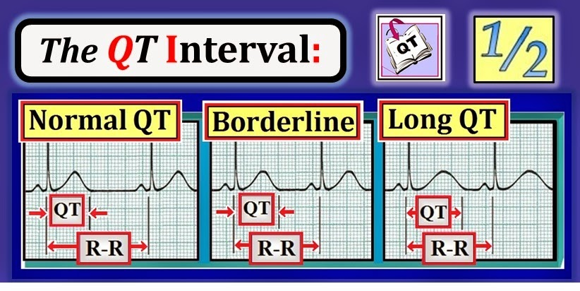
LƯU Ý LÂM SÀNG: Đo chính xác khoảng QT là một chủ đề phức tạp. Có những bảng chi tiết tính đến các yếu tố như tần số tim và giới tính, vốn có thể ảnh hưởng đến thời gian QT. May mắn là — phương pháp “nhìn bằng mắt” nêu trên để đánh giá QT đúng trong phần lớn trường hợp:
- Xác định khoảng QT bình thường hay dài rõ ràng khó hơn khi tần số tim nhanh. Do đó, khi tần số tim trên 100/phút đáng kể — có thể không đáng mất thời gian cố đánh giá khoảng QT.
- Tương tự — QRS rộng cũng có thể làm QT dài ra. Điều này hạn chế những gì có thể rút ra khi đánh giá QT lúc có blốc nhánh.
- NHƯNG — khi tần số tim không quá nhanh (tức là dưới 90-100/phút) — và phức bộ QRS không rộng — quy tắc đơn giản ở Hình 9 có thể rất nhanh chóng cho bạn biết LIỆU QT có bình thường hay không: QT kéo dài — NẾU nó dài hơn một nửa khoảng R-R.
Vì sao cần quan tâm nếu QT kéo dài?
Từ góc độ lâm sàng — chúng ta muốn biết LIỆU QT bình thường hay dài. Đó là vì QT dài khiến bệnh nhân dễ bị một dạng nhịp nhanh thất có thể đe doạ tính mạng gọi là xoắn đỉnh (Torsades de Pointes).
- NẾU QT dài (nhưng phức bộ QRS có thời gian bình thường) — hãy xem xét các nguyên nhân có thể. Các nguyên nhân thường gặp gây QT dài khi QRS có thời gian bình thường là: i) Một số thuốc (và phối hợp thuốc); ii) K+/Mg++ thấp (= hạ kali hoặc hạ magnesi máu); và/hoặc, iii) một “thảm hoạ” thần kinh (tức là đột quỵ, co giật, hôn mê, chấn thương đầu, chảy máu não).
TỰ KIỂM TRA về Các khoảng: QT có bình thường không?
Hãy đọc điện tâm đồ ở Hình 10 về 3 khoảng điện tâm đồ. Lưu ý những điều sau:
- Chúng ta không cần đo chính xác khoảng PR và QRS (Vì ô lưới quá nhỏ — có muốn cũng không làm được). Thay vào đó — chỉ cần đơn giản nêu LIỆU PR và QRS bình thường hay dài.
- Đo QT ở chỗ bạn có thể thấy rõ — và ở (các) chuyển đạo mà nó có vẻ dài nhất?

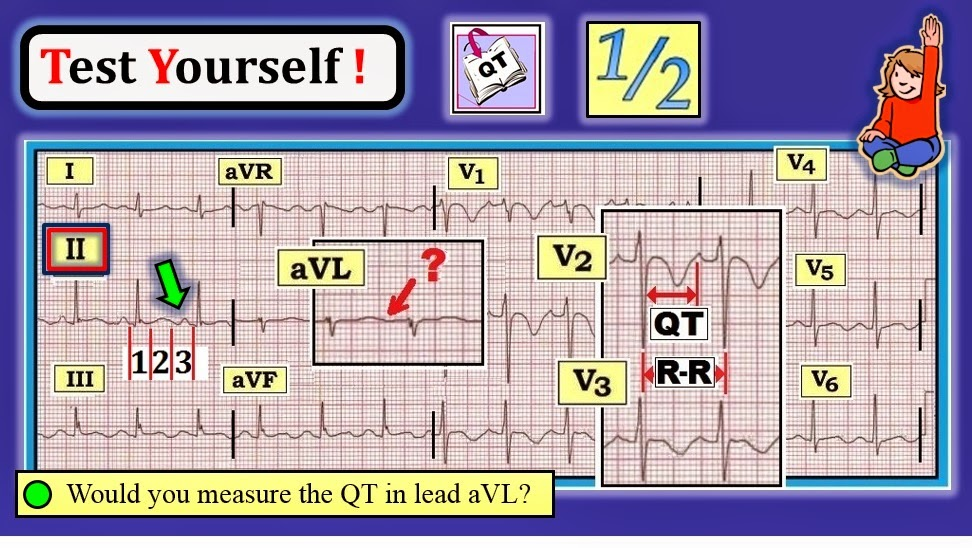
TRẢ LỜI cho Hình 10: Do không có dải nhịp chuyển đạo dài — chúng ta bắt đầu đọc bằng cách xem chuyển đạo II. Dù chuyển đạo II chỉ có 3 nhát — sóng P dương với khoảng PR cố định (mũi tên xanh lá ở chuyển đạo II — ngay trước phức bộ QRS thứ 3 trong chuyển đạo này) — cho biết có nhịp xoang.
- Xem nhanh các chuyển đạo khác của điện tâm đồ 12 chuyển đạo này xác nhận nhịp nhìn chung đều. Tần số nhịp ~100/phút (khoảng R-R ~3 ô lớn — và 300/3 ~100/phút = nhịp nhanh xoang).
- Khoảng PR bình thường (tức là không dài hơn 1 ô lớn).
- QRS hẹp = thời gian bình thường (tức là không dài hơn 1/2 ô lớn).
- Khoảng QT dài (tức là rõ ràng dài hơn 1/2 khoảng R-R ở hình phóng to chuyển đạo V2).
Chuyển đạo nào dùng để đo các khoảng?
Nên đánh giá mỗi khoảng điện tâm đồ ở chuyển đạo mà giới hạn của khoảng đó có thể thấy rõ và, ở đó khoảng này trông dài nhất.
- Phần lớn trường hợp chúng ta đo khoảng PR ở chuyển đạo II — vì đây là chuyển đạo thường thấy sóng P rõ nhất (đồng thời cũng là chuyển đạo dùng để xác định nhịp xoang).
- Nhưng — chúng ta xem cả 12 chuyển đạo khi quyết định dùng (các) chuyển đạo nào để đo khoảng QRS hoặc QT. Ví dụ — chúng ta sẽ không dùng chuyển đạo như aVL để đánh giá khoảng QT ở Hình 10 — vì hầu như không thể biết sóng T biên độ thấp ở chuyển đạo này kết thúc ở đâu (dấu hỏi đỏ). Tuy nhiên, khi chọn chuyển đạo V2 hoặc V3 thì không còn nghi ngờ gì — khoảng QT ở Hình 10 kéo dài!
Mẹo ghi nhớ tổng hợp: Dùng “1” và “2” để nhớ 3 khoảng
Chúng tôi kết thúc bài về các đặc điểm cơ bản của 3 khoảng điện tâm đồ bằng một mẹo ghi nhớ — hy vọng giúp dễ nhớ giới hạn trên bình thường của mỗi khoảng (Hình 11). Đơn giản — Hãy nghĩ đến các con số “1” & “2”.
- Khoảng PR dài — NẾU nó dài hơn 1 ô lớn.
- QRS rộng — NẾU nó dài hơn 1/2 ô lớn.
- QT dài — NẾU nó dài hơn 1/2 khoảng R-R.

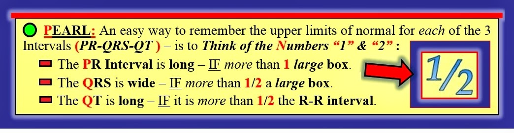
--------------------------------
— Để biết thêm thông tin — TRUY CẬP —
Tài liệu cho hầu như tất cả các hình và nội dung được trích từ ấn phẩm mới nhất của chúng tôi = “A 1st Book on ECGs-2014”.
- Phiên bản ePub mở rộng của cuốn sách này đã phát hành trên Kindle-I-Books-Kobo-Nook! Vì không bị giới hạn dung lượng như sách in — phần giải thích được tăng cường và các bàn luận chuyên sâu hơn trong phiên bản ePub.
- Thông tin (và các trang mẫu) cho cả sách và ePub có tại: www.ecg1stbook.com – Liên hệ với chúng tôi nếu có câu hỏi! (= ekgpress@mac.com)

--
- Mời bạn tải miễn phí GLOSSARY (bảng thuật ngữ) mở rộng của chúng tôi về các thuật ngữ liên quan đến điện tâm đồ.

- -
--------------------------------------------------------------